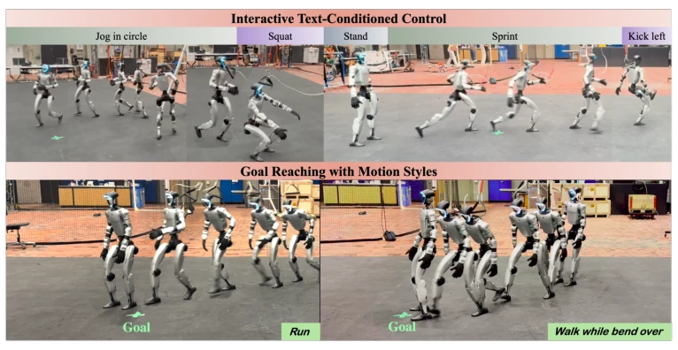
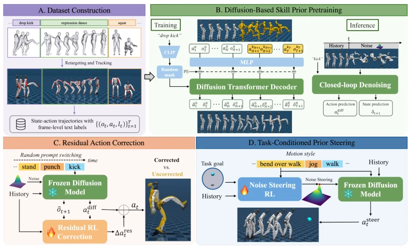
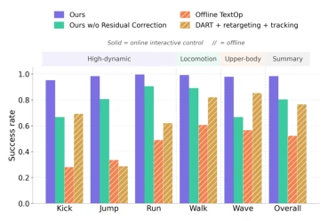
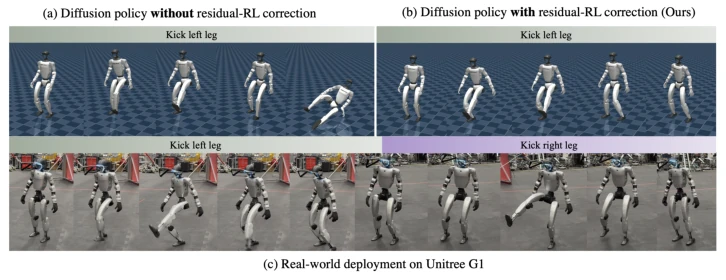
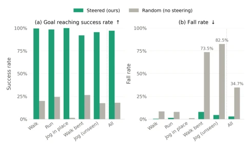

This paper adds fuel to the fire for diffusion policies in humanoid robot control, but this time it is not just empty slogans. The core of ADAPT lies in stability, using residual RL to patch the diffusion model, solving the collapse issues of pure BC during long-horizon and instruction switching. However, the authors also acknowledge that high-dynamic actions (such as high jumps) will be treated conservatively by the residual policy, which counts as sacrificing some flexibility for safety. Overall, this is a very pragmatic engineering improvement that pushes Diffusion Policy from simulation to real machines, but the trade-off between model capacity and inference speed remains worrying, after all, 2ms latency might still be too tight in complex physical interactions, and residual correction occasionally smooths out the personality of actions.
研究动机Motivation
人形机器人听懂人话并动起来是个闭环控制难题。现有两阶段方法（如 SONIC [1], TextOP [4]）先生成运动再跟踪，容易因运动学动力学不匹配导致失控，尤其在快速切换指令时。端到端方法（如 LangWBC [5], SENTINEL [3]）虽直接映射，但依赖粗粒度序列标注，缺乏技能过渡的细粒度监督，难以应对在线指令变更。ADAPT 旨在解决这些痛点，通过细粒度技能扩散先验实现鲁棒、平滑的交互式控制，并支持下游任务复用，填补了从文本到物理执行的鸿沟。
Having humanoid robots understand human speech and move is a closed-loop control challenge. Existing two-stage methods (e.g., SONIC [1], TextOP [4]) first generate motion then track, prone to loss of control due to kinematic-dynamic mismatch, especially during fast instruction switching. End-to-end methods (e.g., LangWBC [5], SENTINEL [3]) although directly mapping, rely on coarse-grained sequence labeling, lack fine-grained supervision for skill transitions, and are difficult to handle online instruction changes. ADAPT aims to solve these pain points, achieving robust, smooth interactive control through fine-grained skill diffusion priors, supporting downstream task reuse, and bridging the gap from text to physical execution.
The overall process is divided into three steps: First, build a physics-realistic state-action-text dataset, retarget AMASS actions to Unitree G1 and track in simulation, applying domain randomization. Second, pre-train text-conditioned diffusion policy, using an 8-layer causal Transformer decoder to predict future states and actions as skill priors, supporting multi-modal action distribution. Next, train a lightweight residual RL module on the frozen diffusion policy, correcting only lower limb actions to balance stability and semantics, preventing overwriting original skills, adopting spatial constraints and self-tracking regularization to ensure motion semantics do not collapse. Finally, reuse the frozen policy through noise space optimization (Noise Steering), guiding the robot to complete downstream tasks such as goal reaching, while maintaining text-specified motion styles, without requiring retraining.

Figure 1: ADAPT is an end-to-end diffusion-based skill prior that enables interactive text-driven humanoid control with smooth and robust skill transitions and can be reused for downstream tasks to achieve goal-reaching with controllable motion styles. Please refer to the project webpage for real-world deployment performance.

Figure 2: Method overview. We pretrain a text-conditioned diffusion skill prior on retargeted hu- manoid motion data (A, B), then adapt it to downstream use via two complementary mechanisms: residual RL corrects the prior’s actions to improve robustness for interactive control (C), while noise steering RL guides the frozen prior toward task goals with controllable motion styles (D).
Tested on Unitree G1 real robot, compared with DART [49], TextOp [4], and LangWBC [5]. Metrics include success rate, smoothness, semantic alignment (R@k). ADAPT success rate reaches 0.984, significantly better than two-stage baselines. Ablation shows residual RL is crucial for high-dynamic skills (such as kicking), after removal success rate drops to 0.804. Noise steering module reduces fall rate from 34.7% to 2.9% in goal reaching tasks. Although semantic alignment is slightly sacrificed, it gains higher deployment safety. Sim-to-Real transfer performance is reliable, but challenges remain in long-horizon tasks such as single-leg support.

Figure 3: Success rates across representative motion classes.

Figure 4: Ablation on the residual RL for robustness correction, and real-world deployment result.

Figure 5: Goal reaching performance with steering policy.